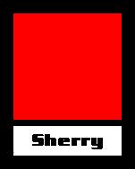
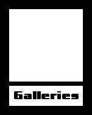
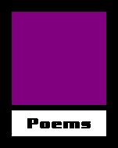
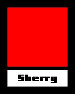
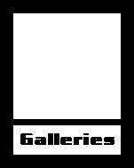
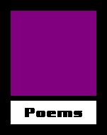
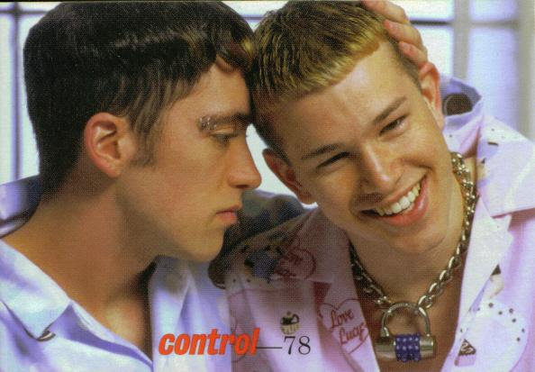

Apologies for not updating in a while, I've been very busy this semester. The summer is upon us once again, and this year I'll be staying in Athens. I am planning on making as much money as possible this year, and it will be nice spending my free time with Matt and my many other Athens-bound friends. Hopefully, assuming I have a good earning potential, I'll be replacing my shitty laptop at the beginning of the summer. I may also try my hand at selling on eBay--anything to get my hands on some money. I also plan on doing a few things at the Red & Black (assuming they'll have me). Anyways, more on all that in the Blog. This week, in celebration of Matt and my One Year anniversary, there are lots of Matt-related goodies. Check those out. Also, as promised, I have a new revamped Poems Page. This one is actually good...no, seriously!
My site is named Thursday after a poem I wrote during my senior year of high school. It describes a time in my life when I was dealing with many issues...issues involving sexuality, family, friends, and rejection. It was all terribly emotional and damaging, and that poem is my little souvenir. It is really an explanation of how things seem at this place in time...I'm poised at a junction...between the horrible work week and the blissful abyss of the forthcoming weekend...between peril and pleasantness...spanning the beginning, crashing toward the end.

This is my most favorite picture of boys! Nathan is so fucking hot!
| When I made my webpage, one of the first pages I made was the very cool Gay Page, for which I scoured the Internet for days looking for some very "gay" content. Click here to see what I dug up, also read about what I think about the whole "gay thing" | |
| Since 1994, garbage has been rocking the world with their unique blend of electonic sound, alternative, and pop. Click here to read about the band, the albums, the music, and how garbage is such an important part of my life. Also, gander at the Top Ten list with commentary on my favorite garbage songs. | |
| Since the beginning, there have been Friends pages. Click here to read my glorified shout-outs to the people in my life that I believe are the most important to me. Also, there are special pages included here as well, such as the Pets Page and Brandy's Page. | |
| The show might be over, but the legacy lives on. Click here to hear what I have to say about the TV show Buffy the Vampire Slayer. Included is a Top Ten list of my favorite episodes with synopsis. Come learn about the life and struggle of the Slayer! | |
|
The Internet is a big place, and though I know my webpage might be your favorite one-stop spot, we would be hurting ourselves if we didn't acknowledge that there's more out there. Click here to explore the sites on the net that I consistantly hit. |
| If the Blog is getting on your nerves, you should probably click here to read about the inane life of Sherry Cherry, my 7th grade creation come back to entertain us all. This isn't updated all too often, though once or twice a semester you might find something new to look at. | |
| By FAR the most popular place on my website. It has sadly out-hit the front page, with nearly 4,000 hits! I've been Blogging since the Spring of 2002. Click here to read my most recent blogs. Click on the older Blog/journal icons to read some entries from past semesters/summers. | |
| The second most popular page other than my front page. Click here to see some pictures of me and my friends during our various activities that in some way have invovled a camera. The pictures are organized by my semesters at UGA. | |
| Click here to read some of my creative works, poems that is. My personal favorites include "Separation", "Thursday", "Locked Inside", "Love", etc. All of them are interesting, though as you may notice, alot of them SUCK! My best poem is probably "Separation," so check that out and try not to be to harsh... |
ME
Here is a bunch of STUFF about myself. I really hope it's not boring...but then it had better not be! YOU CAME HERE TO SEE STUFF ABOUT ME, NOT MY BRAIN-DEAD FRIENDS! Enjoy!
I'm an avid fan of the television program Buffy the Vampire Slayer. I'm slowly acquiring the entire series on DVD. To learn more about the show and my thoughts on it, please visit my Buffy Page.
Since high school, I've been CRAZY about garbage, they are my most favorite band. Go to the garbage Page to see my section devoted to the the music of my life! Other than garbage, I really enjoy The Cure, The Flaming Lips, The Smiths, Patsy Cline, Kylie Minogue, Tears for Fears, and New Order
Yes, I'm gay, though I consider myself to be bisexual solely on the fact that I believe sexuality is a fluid thing. I take alot of pride in being queer, but maintain that it is not all that I am. The Gay Page offers some information on what it is to be gay and to be myself. (In other gay related news, I think Nathan Smorynski is hot)
I'm a writer. For a good idea of my writing talents, you can check out my Poems Page. Featured is the title poem for the website, Thursday. To read the weekly exercise of my writing talents, please visit my Blog Page.
I go to the University of Georgia. I really do enjoy things here, despite a gaping lack of diversity. I seem to manage though. If you're interested in learning more about the University, visit us at uga.edu.
I am a board member of Lambda Alliance, the gay, lesbian, bisexual, and transgendered organization at UGA club here at the University. If you are a closeted individual at UGA, look at our site to learn more about us. It's a nice club to go to on Monday nights at 7, and you can come talk to me and see what's up. Visit Lambda Online to learn more about being gay and at UGA.
Other than Buffy, I enjoy many television shows, which include some fun cartoon programs like Futurama, The Simpsons, Daria, and The Family Guy. Also, I watch alittle anime when it's really late and there's not much on. I've been known to be into Dragonball and Dragonball Z and I am becoming acquainted with Inuyasha (thanks to April). As far as hardcore TV watching, I'm still very involved with the Buffyverse, watching Angel on a regular basis. You may also catch me watching The Sunday Night Sex Show from time to time. Some of my favorite movies include Amelie, Trois Colours: Rouge, Donnie Darko, Contact, Chicken Run, and Requiem for a Dream.
My first dog, Brandy, was very important to me. She was put to sleep on June 14, 2001, and I miss her very much. Go to Brandy's Page to see some wonderful pictures of her and to read about why she is so special. You may also visit my Pets Page to see pictures of my cat Lily and my mom's dog Joey. Both are very unique and hysterical. Lily is the sweetest cat ever, and Joey is a prissy wimp.
I've worked at alot of places of the years. I spent a year and a half at Kroger when I was 15. I was a cashier and eventually became a U-Scan specialist. I moved over to Target where I spent over three years working on the Sales Floor, in Electronics, as a Cashier (against my will), doing planograms, scanning markdowns, and preparing for inventory. After ditching this, I moved to Taco Mac, a charming sports bar that features Draught Beer and Buffalo Wings. I worked here during the summer of 2003 as a server, and there was alot of stress and nightmares (if you served, you'd understand). Since this job, I've been in a limbo, working at Rich's - Macy's during the holidays, still quasi-employeed at Taco Mac, though looking forward to landing my first job in Athens.
I think that may be it for now...what to leave you with? Well, I was thinking of giving my own garbage suggestion of the week or something. Check back next Sunday to see how I think this week is going to be as seen through the voice and sound of garbage!
e-mail: yoshi369@yahoo.com